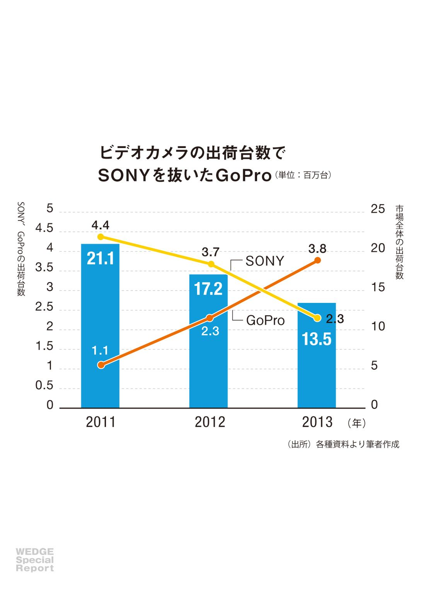
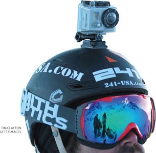
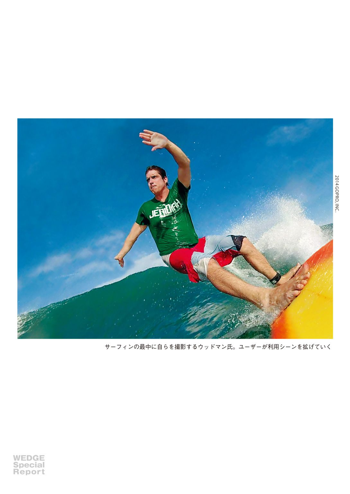
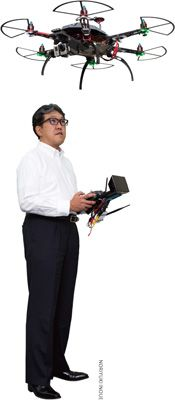
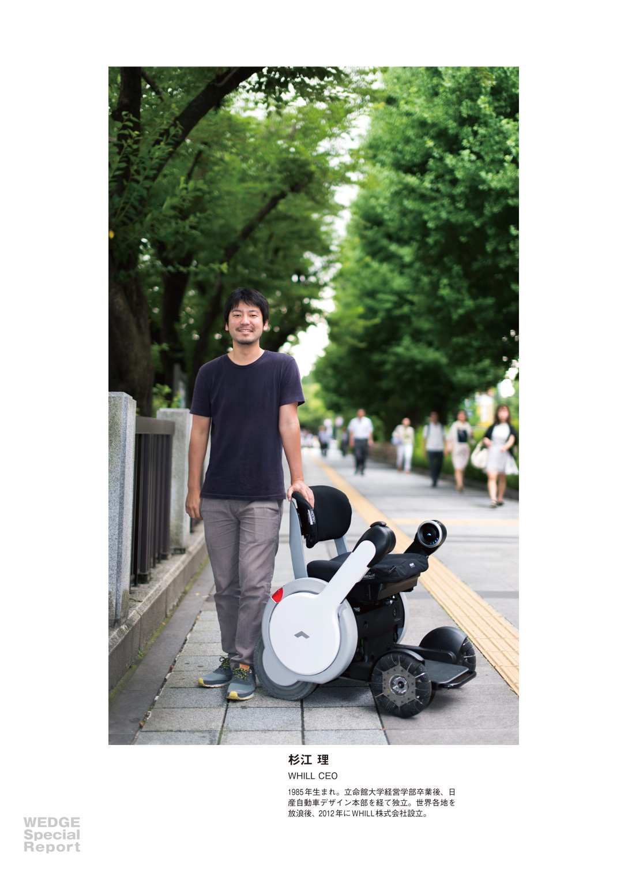
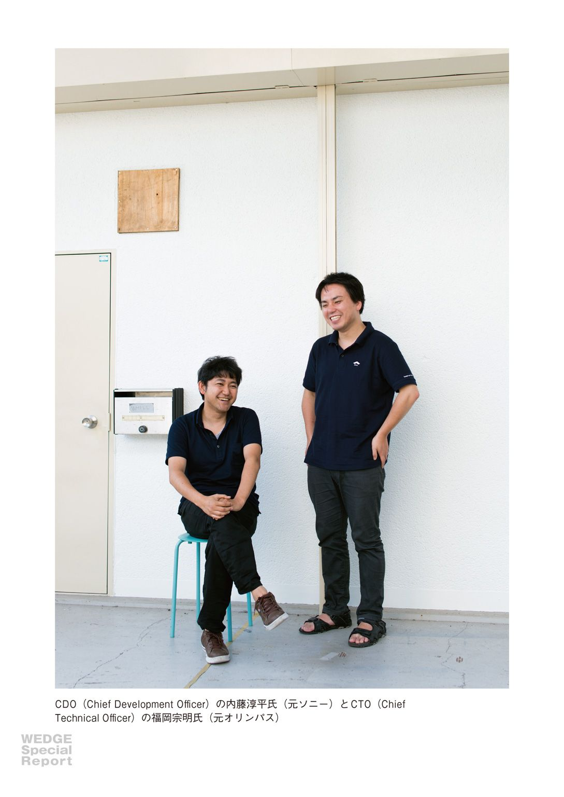
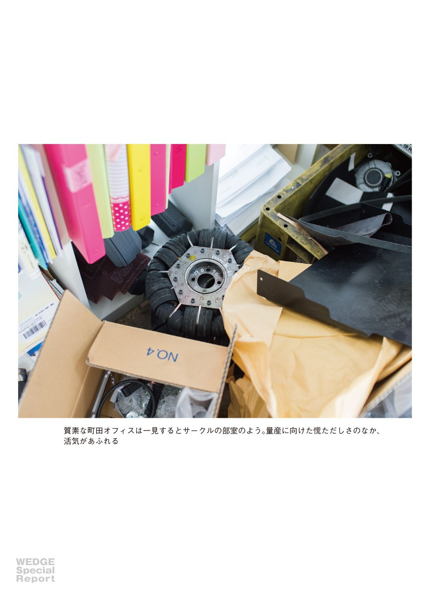
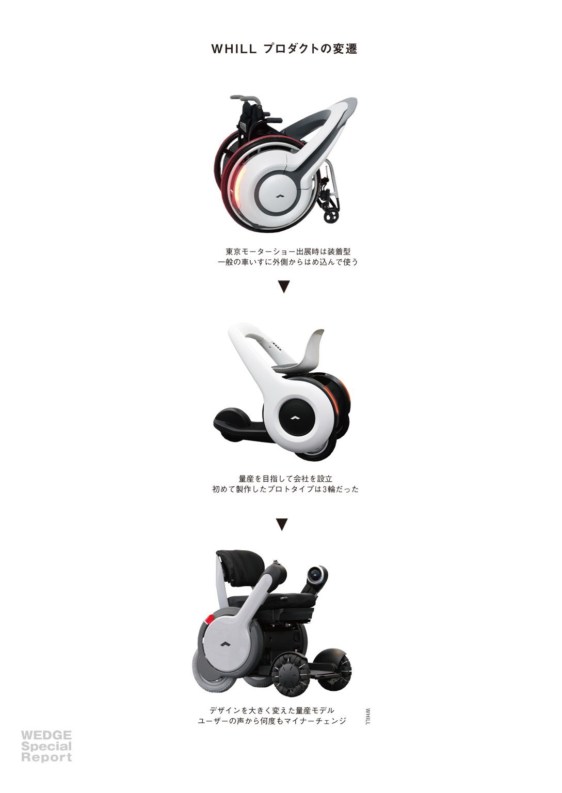
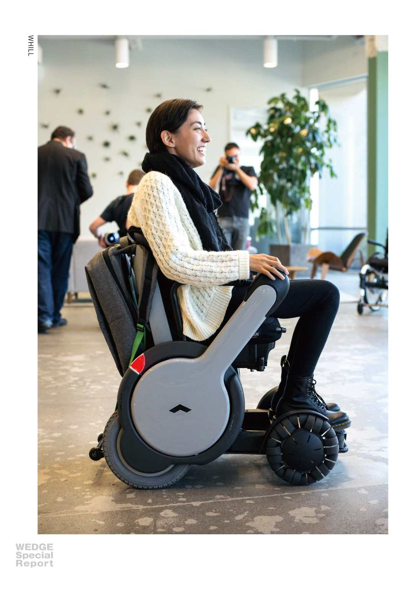

| GoPro｜WHILL ハードウェアベンチャーから学べ！ Wedgeセレクション | |
| 川手 恭輔 & 長倉 克枝 & Wedge編集部 | |
| (2014) | |
初 出：この電子書籍は月刊『Wedge』２０１４年８月号掲載の特集記事を電子化したものです。電子化に際し、一部加筆・修正を加えている場合もあります。
【表紙画像】１９７５年生まれのニック・ウッドマン。６月26 日ゴープロは、米ナスダック市場でＩＰＯ（新規株公開）を果たし、４億２７２０万ドル（約４３０億円）を調達した。
ERIC MILLETTE/FORBES
COLLECTION/CORBIS OUTLINE/
AMANAIMAGES
Special Report 2
ハードウェアベンチャーが
日本のメーカーに問いかけるもの
ビデオカメラの出荷台数でＳＯＮＹを抜いた「ＧｏＰｒｏ」。
大企業を辞めた若手エンジニアたちが産み出した車椅子「ＷＨＩＬＬ」。
ＩＴ主体だった〝スタートアップ〟は、モノづくりにまでやってきた。
ＰＡＲＴ１ ＳＯＮＹはなぜＧｏＰｒｏを作れなかったか？
ゴープロの衝撃
日本のモノづくりを考え直す時
ビデオカメラが売れなくなってしまったのは、スマートフォンが普及したからではない。
顧客が諦めていることを理解し、それを解決しようとする努力を怠っていたからだ。
文・ 川手恭輔
ゴープロ（ＧｏＰｒｏ）をご存知だろうか。名前を聞いたことがなくても、テレビのバラエティー番組でバンジージャンプをするタレントの恐怖の表情を撮影するために、ヘルメットにアームで取り付けられた小さなビデオカメラを目にしたことがあるかもしれない。あるいは空中からの映像やカメラマンが居ないはずの狭い車内などの映像をどうやって撮影したのだろうと思うことがあったかもしれない。いまやそれらの新しい映像のほとんどがゴープロ社というアメリカのベンチャー企業が開発したゴープロシリーズのビデオカメラで撮影されたものだ。
このゴープロ社は２０１４年６月26 日、米ナスダック市場でのＩＰＯ（新規株公開）を果たした。申請時に公開された資料によって11 年が１１４万台、12 年２３１万台、13 年３８４万台と、これまで公表されなかったゴープロシリーズの出荷台数が明らかになった。ソニーの業績資料によるとソニーのビデオカメラは、対照的に12 年３７０万台、13 年２３０万台となっているから、13 年のうちにゴープロ社が台数ベースでソニーを抜いてビデオカメラ市場のトップに躍り出ていたことになる。米調査会社ＩＤＣの資料から得たビデオカメラ全体の出荷台数とともにグラフにしてみた（後出）。

ビデオカメラ市場の縮小に伴ってソニーの出荷台数が同じように減っているのがわかる。全体の出荷台数からゴープロの数値を引いて比較すると13 年は市場全体もソニーの出荷台数も対前年で同じような割合で落ち込んでいることがわかる。
ソニーなど国内のビデオカメラメーカーが、ゴープロと同じアクションカメラと呼ばれるジャンルのビデオカメラを市場に投入している。ゴープロのハードやソフトに特別に新しい技術が使われているということはないので、機能的にゴープロと同様もしくはそれ以上のものを作ることはさほど難しいことではない。日本のビデオカメラメーカーは、なぜ最初にゴープロを考えだすことができなかったのだろう。
ゼロからの足し算
ゴープロの仕様を見てみよう。レンズは１７０度という画角に固定されズームはできない。撮影の時や撮った映像を確認するための液晶モニターがついていない。激しく動くスポーツシーンでの使用やバイクやサーフボードに取り付けて撮影することを考えると必須と思えるブレ防止機能も搭載されていない。すでに存在するビデオカメラを基準にすると、このような引き算の考え方で見てしまう。
ニック・ウッドマンは02 年にゴープロ社の前身のウッドマン・ラボ社を創業したとなっているが、デジタルカメラを発売するのは07 年になってからだ。創業当初は、防水ケースに入ったレンズ付きフィルムカメラを腕に固定するバンドを作って売っていた。ニック・ウッドマンはサーフィンが大好きで、仲間たちが苦労して腕に括り付けたカメラで自分たちのライディング（波に乗ること）を撮影しているのを見て専用のバンドを作ることを思いついたそうだ。
05 年にはフィルムカメラを発売し、07 年にデジタルヒーローというデジタルカメラを発売した。バンドからデジタルカメラを作ることまでには大きな飛躍があるが、ニック・ウッドマンは元来の起業家だった。そしてサーフィンのすごい映像を撮影できるカメラが欲しいという特別な情熱を持ち続けた。10 年にハイビジョン撮影が可能なゴープロＨＤヒーローを発売したとき、ウッドマン・ラボ社は７人ほどの社員でハードウェアとソフトウェアの開発を行い、日本のデジタルカメラなどのＯＥＭ生産で知られる台湾のフォックスコンに生産を委託していた。
こういった状況でサーフィンを撮るための新しいカメラを考えるとき、何もないところから必要な機能だけを足していくことになる。ユーザーが使うかどうかわからない機能もとりあえず入れておこうということにはならない。これまでのビデオカメラの形状にとらわれることなく、腕やサーフボードに取り付けやすくデザインする。

モニターを見たりファインダーを覗いたりしながら撮影することが難しい状況が多いからそれらははじめから不要であり、そうなるとだいたいの方向に向ければ撮りたいものが画面に入るように広角のレンズが必要になる。もちろんズーム機能は必要ない。ブレ防止機能はぜひとも欲しいところではあるものの、一般のビデオカメラについている手ブレ補正機能ではアクションカメラの利用シーンでの激しい動きに対応するには不十分であり、中途半端なものは搭載しない方がいいと割り切ってしまう。
このような製品を、既存のビデオカメラを起点にして引き算で考え出すことは非常に難しい。どうしても、せっかく持っている技術だから活用しないのはもったいない、使われないかもしれない機能でも入れておいても邪魔にはならないだろうと考えてしまう。さらに、他社の競合商品と機能を比べた星取り表で負けてしまうという不安をぬぐい去ることができない。機能が少なければいいということではない。余計な機能がついていないということが、これまでになかった新しいコンセプトを際立たせるために重要なのだ。それによってユーザーはそれが何のためのモノであるかを理解することができ、自分にとってどのような価値をもたらしてくれるかを容易にイメージすることができる。
いったんモノの事業化に成功すると、どうしてもその事業の成長のための「モノづくり」に集中し、組織やプロセスをモノの性能と効率の向上のために最適化して、目先の顧客視点や顧客ニーズによるマーケットインに頼ったバリューチェインを構築してしまう。これはクレイトン・Ｍ・クリステンセンが『イノベーションのジレンマ』で言っていることだ。目先の顧客視点や顧客ニーズからは、ゴープロという発想は生まれてこない。
あなたの顧客が諦めていることを理解する
Ｂ・Ｊ・パイン、Ｊ・Ｈ・ギルモアの『経験経済』に「顧客の諦め」という言葉がでてくる。顧客が諦めていることを理解すると、いま顧客が受け入れていることと本当に必要としていることとのギャップが見えてくるという。あなたの顧客が諦めていることは実はあなたもまだ気付いていないか、あるいは実現が不可能だとこれまで諦めていたことであるかもしれない。
ビデオカメラが売れなくなってしまったのは、動画を撮影することができるデジタルカメラやスマートフォンが普及したからではない。動画を撮影するという基本的なニーズがなくなったからでもない。それどころか、人々は以前にも増して気軽に動画を撮影し、インターネットの動画共有サイトに投稿して楽しむようになった。既存のビデオカメラメーカーは競合との顧客不在の高機能化競争にかまけて、自分の顧客が諦めていることを理解しそれを解決しようとする努力を怠っていた。サーフィンのすごい映像を撮りたいと思いながら諦めていた顧客を理解することができなかった。
あなたの顧客も自分が本当に必要としていること、すなわち潜在的なニーズが何であるかを知らないかもしれない。それはあなたが、それを満たすことができる新しいモノを提供してから「これが欲しかったんだ」と初めて知ることになる。顧客が諦めていることを理解するためには、あなたが提供するモノを使う顧客の基本的なニーズに立ち戻り、それをもういちど徹底的に分析し顧客の行動を先入観を捨てて観察する必要がある。

事前設計主義からの脱却
品質などの属性が均一化して差異がなくなり、相場によって大量に取引されるようになった農産物や天然資源などをコモディティ商品という。工業製品がコモディティ商品になることはないが、市場において競合との差別化が困難になり事業利益が下落する状況はコモディティ化と呼ばれている。デジタルやインターネットなどの技術の急速な発達によって製品のコモディティ化が加速するなかで、製品を提供する企業は、その製品自体の価値だけでなく、その製品を利用する過程で顧客が感じる価値（経験価値）にも着目した事業戦略や商品戦略を考える必要がある。これは日本のモノづくり全体に求められていることだ。
前述したようにゴープロという製品自体に特筆すべき機能はない。日本のビデオカメラメーカーであれば簡単に作れてしまうものだ。しかし、その製品を利用する過程で感じることができる価値は、確実に「諦めていた顧客」の心をつかみ、サーフィンをする人たちだけでなく多くのアスリートや映像産業などのユーザーグループを獲得した。そして、その周辺にはゴープロの利用シーンを拡げるアクセサリーを競って開発してくれるサードパーティーなどによって小規模ながらエコシステムといえるものが形成されている。
このような製品を作り上げるには、これまでの日本のモノづくりで行われていた事前設計主義、すなわちすべての要件を仕様化してから時間をかけて作り込むというやり方から脱却する必要がある。あなたの顧客が諦めていることを見つけ出し、それを満たすために既存の製品からの引き算ではなく、ゼロからの足し算で持てる技術から必要最小限の尖ったモノをつくり市場に提供する。
もちろん、それまでになかった新しいモノが提供されたとき、人々がその価値をすぐには理解できず市場に受け入れられるまでに時間がかかることは多い。ゴープロもアイポッド（ｉＰｏｄ）も３年かかっている。その間のユーザーの思いを積み上げていくプロセスが人々の共感を得ることにつながる。
ゴープロのほんとうの衝撃
ゴープロのような新しい価値を提供しようと起業された会社は、アメリカではベンチャーではなくスタートアップと呼ばれる。スタートアップは、フェイスブックのようにナスダックへの上場を果たすか、写真共有サービスのインスタグラムのように他社に買収されて、創業者が莫大なお金を手にすることを目標としている。これまでその目標を達成したスタートアップのほとんどは、インターネットを利用したサービス業であった。しかし最近ではゴープロや、先日アップル社に買収されたビーツ（Ｂｅａｔｓ）という音楽配信サービスも手がけるヘッドホンメーカーなどのようなモノづくりのスタートアップも数多く出現している。
『フリー』などのベストセラーを書いたＷｉｒｅｄ誌の元編集長クリス・アンダーソンは『メイカーズ』で20 世紀のモノづくりモデルの規模の最大化は、21 世紀においては欠点となると言っている。もはやモノのアイデアを形にするために大きな工場を作ったり多額の資金を集めたり大勢の人を雇い入れたりする必要はない。３Ｄプリンタなどでモックアップを作り、インターネットのコミュニティで仲間や資金を集め、小ロットでも受託してくれる工場に生産をアウトソーシングするという新しい製造業の形ができつつある。
特にアメリカのシリコンバレー周辺地域には、これらのスタートアップが生まれる環境がある。多くの投資家が注目し、スタートアップを支援するしくみができ上がっている。自分のビジネスを売却することによって得た資金を、別のスタートアップに投資するという循環も生まれ、失敗した起業家にも次のチャンスが与えられる。そこに起業を目指すアイデアマンやエンジニアが世界中から集まり、新しい価値を創造しようというパワーに溢れている。それが日本のモノづくりのトップブランドを脅かすようになった。
日本のモノづくりがジレンマを感じている余裕はない。持っている技術やリソースを「焦げ付き資産」にしてしまうのではなく、その強みを最大限に生かすための挑戦をはじめる時だ。

かわて・きょうすけ コンセプトデザイン・サイエンティスト（コンサルタント）。専門分野は、製品とインターネットサービスを統合して新しい価値を生み出す「モノのデジタル・リマスタリング」。
COLUMN
ビジネスシーンでの利用も広がるＧｏＰｒｏ
齋藤安弘 日本原料代表取締役社長
マルチコプターと呼ばれるラジコンヘリに「ゴープロ（ＧｏＰｒｏ）」を搭載して、浄水場や災害現場を空から撮影するという新サービスを開始した日本原料（川崎市川崎区）。同社は浄水場で使用される〝ろ過砂〟で国内トップシェアを誇る。
齋藤安弘社長は「ユーザーサポートにつながると考えて、空撮プロジェクトチームを立ち上げた」という。ろ過砂を入れ替える際に浄水場のろ過池を上空から撮影したり、災害時に空から水道管の破損状況を調べたりしている。
２０１３年末、大きな台風被害に遭ったフィリピン・レイテ島で、移動式砂ろ過浄水装置『モバイルシフォンタンク』を設置すべく救援に訪れた際には、被災状況を確認するのに空撮映像が大いに役立ったという。
元々、ラジコンを趣味にしていたという齋藤社長。２０１２年頃、マルチコプターの存在を知り、ネットで部品を購入して自前で製作した。これに搭載するのに良いカメラはないかと物色していたときに発見したのがゴープロだった。
「大手メーカーのビデオカメラと比較するとデザイン性がないということになりますが、シンプルな四角だからこそ色々な所に取り付けが可能で、使い方に幅を持たせるという意図を持った設計になっていると思います」（齋藤社長）。
マルチコプターにゴープロを搭載して撮影するときには、ブレを防止する「ジンバル」という装置を取り付ける。これにも様々な利用シーンを想定したものが用意されており、ビジネスシーンでの利用も今後増えていきそうだ。（編集部）

ＰＡＲＴ２ シリコンバレーで育つ日本のモノづくり「ＷＨＩＬＬ」
さらば日産 さよならソニー
原石たちはスタートアップで輝く
大手メーカー出身の若きデザイナーやエンジニアからなる「ＷＨＩＬＬ」が加速している。
前のめりな彼らの行動力や挑戦心は、いったいどんな環境で育まれているのか。
文・ 長倉克枝 写真・ 井上智幸
米国シリコンバレーに本社を置く日本発ベンチャー企業ＷＨＩＬＬ（ウィル）は、２０１４年８月にも次世代車いすの量産に入る。すでに日米で受注しており、まずは東京・日野市の組立工場で50 台を生産し、９月には出荷を始める。秋には台湾での量産体制を整え、14 年度末までに２５０台の生産を目指す。
量産には相当の資金が必要だが、投資家でＷＨＩＬＬのメンターを務めるＴｏｍｙＫの鎌田富久は「複数の日本の大手ベンチャーキャピタル（ＶＣ）も強い興味を持っており、応援してもらえそうだ」と言う。
ＷＨＩＬＬがデビューを飾ったのは、11 年12 月の東京モーターショー。日産自動車出身でデザイナーの杉江理、ソニー、オリンパスのエンジニアだった内藤淳平、福岡宗明らで構成する自主開発プロジェクトによる、コンセプトモデルとして発表された。それは、かっこいい車いすで、健常者も乗りたくなるパーソナルモビリティ。業界関係者や車いすユーザーに衝撃を与え、メディアの注目も集めた。
この時の反響が後押しして、12 年５月にＷＨＩＬＬを起業。約２年で実機をユーザーに届ける段階までこぎつけた。しかし、「ハードウェアベンチャーは投資リスクが高いとＶＣに見られている」（鎌田）。その上、車いすとなると市場拡大も新規参入も難しい。
ＷＨＩＬＬがコンセプトモデルで終わらずに、短期間で本格的な市場参入の足がかりを得たのはなぜなのか。
危機は３カ月に１度
もちろん、ここに来るまでの道のりは長く険しかった。「会社が終わってしまうのでは、と３カ月に１度くらいは感じた」と３人は口をそろえる。
資金面もさることながら、「方向性の違いから仲間が辞めたときがもっとも辛かった。メンバーの思想が合うことが重要」とＣＥＯ（最高経営責任者）の杉江は振り返る。

ＣＤＯ（最高開発責任者）の内藤がもっとも苦しかったのは「量産につなげるプロトタイプの開発がスムーズに行かず、ユーザーの評判が上がらなかったとき」だ。「夜中のシリコンバレーで、空港と宿を結ぶハイウェイを５周回って杉江と話し込んだ」（内藤）。
杉江はデザイナー出身だが、今ではシリコンバレーの本社を拠点に、経営、資金調達、社員の採用、市場参入に向けた関係者のネットワーキングなどを幅広く手がける。
大学でボクシングに明け暮れた杉江は、４年生のとき日産のデザイナーに出会い影響を受けた。卒業後、デザインの専門学校に１年通い、念願叶って日産自動車に入社。車体デザインを担当した。ところが、余暇の時間で作った開けやすいペットボトルのふたで年間50 万円ほどの報酬を得たことが「他社の利益に貢献した」と問題に。呆れた杉江は入社３年で退職、その３日後には中国・南京へ向かい、１年半滞在して、世界放浪の旅へ出た。
中国での暮らしは、貼り紙で見つけた見知らぬ中国人女性とルームシェアすることから始まった。たった２週間で仕事も見つけた。中国を選んだ理由は「世界中に中国人いるんで、中国人を味方につけたらいいなあと思って」。
その後放浪したのは、ボリビア、パプアニューギニアなど。「世界一標高の高い空港があるとか、世界一プリミティブな民族がいるとか聞くと行ってみたくなった」からだ。
一方、内藤とＣＴＯ（最高技術責任者）を務める福岡は、名古屋大学工学部の同期生。就職で上京して約１年、学生時代に勉強会をしていた仲間たちと週末や夜に集まり、「サニーサイド・ガレージ」と称してモノづくり活動を始めた。「懐中電灯なしでホタルをきれいに見たい」（福岡）との思いから開発し、相模原市役所に持ち込んだホタル観賞用ライトは、今でも時期になると市内の公園で点灯する。

車いす開発の始まりは、偶然だった。大きなものを安く成形する技術の見学に行ったことがきっかけで、サニーサイド・ガレージでは、発展途上国向けに安い車いすを作る、というアイデアが持ち上がった。当時ラオスを放浪していた杉江に現地調査を依頼すると、売れるほどの市場はないと判明。杉江は帰国後すかさず、「先進国向けの車いすを作ろう」と逆提案した。
まず、ユーザーに会いに行った。神奈川県総合リハビリテーションセンターで出会った車いすユーザーの一言が彼らの心に刺さった。
「１００メートル先のコンビニに行くのも諦める」
かっこよくて機能性の高い車いすを作ろう──。杉江が設立していたデザイン業務等の請負会社「スマイル・パーク」とサニーサイド・ガレージは、共同でＷＨＩＬＬプロジェクトを開始。町田を拠点とし、ゴールを東京モーターショー出展に定めた。

起業家に変えたＷＨＩＬＬ
開発したコンセプトモデルを東京モーターショーに出すと、車いすユーザーなどから問い合わせが相次いだ。海外からも１００件を超える問い合わせがあった。当初はゴールと考えていた東京モーターショーだったが、期間中から「次の段階、ビジネスを考えないと、と思った」（杉江）。
日産で一番面白かったのは「プロトタイプから量産に至るまでの全工程を見たこと」と語る杉江は、コンセプトワークばかりに熱中するデザイナーではなく、量産志向のビジネスマインドを持っていた。「日本との差異」が目立つ途上国を放浪しても有望なマーケットを見つけられなかったが、日本をはじめとする「先進国の中にある差異」にビジネスチャンスがあることに気づいたということなのかもしれない。
東京モーターショーから半年後の12 年５月、杉江が中心となって、ＷＨＩＬＬ株式会社を設立。まもなく内藤と福岡がそれぞれソニーとオリンパスを退社し、合流した。評判を集めたとはいえ、大手メーカーを辞めることに抵抗はなかったのだろうか。
「やらないといけないと責任を感じていました」（福岡）
頭にあったのは、車いすメーカーのオーエックスエンジニアリングの創業者、故・石井重行の言葉だった。東京モーターショーの数カ月前、開発中の車いすの話をすると、「本気でやる気が無いなら、今すぐやめろ。プロトタイプ止まりで市場に出ないなら、期待だけさせて残酷だ」と叱責されたのだ。
起業から１年後、杉江は本社をシリコンバレーに移した。「結果的に見たら、ユーザー調査しやすいし、マーケットも大きいから行って良かったんですが、ＵＳだと引っ張っていったのは杉江」（福岡）。杉江は日米各40 社近いＶＣを巡った。シリコンバレーのスタートアップ支援で有名なファイブハンドレッド・スタートアップには、「直接乗り込んで、実機でぐるぐる回ったら興味を持ってくれて話がトントン拍子に進んだ」。難航していた資金集めはこれをきっかけに前進し、１００万ドルの調達が実現した。鎌田は「思い切りが良く諦めが悪い。リスクをとって長い道を進むことができる」と、ＣＥＯとしてデザイナーからプロデューサーに進化した杉江を高く評価する。
「不思議と人に好かれる男。僕らがやっていることの魅力を人に伝えることができる」と評価する内藤、福岡も、ＷＨＩＬＬによってプロダクトアウト（製品志向）のエンジニアから、マーケットイン（顧客志向）のクリエイターに進化を遂げている。
初期は当然外部資金もなく、皆で自己資金５００万円を投じてモーターショー向けの１号機を開発。２号機にも同額を投じた。
２号機までは杉江がデザインしたアーチ型デザインだったが、量産を意識したプロトタイプとなる３号機は前方に肘掛けが飛び出したアーム型（後掲の図参照）。これは、粘り強く２００人以上のユーザーの話を聞いたことで起きた変化だ。

従来の車いすは横から見ると背もたれが目立ち後ろ向きの姿勢に見えるが、アーチ型は前向きに見える。ちょうど走るときの前傾姿勢のように。アーチは「すべての人の移動をかっこよくスマートにする」というＷＨＩＬＬのコンセプトの象徴だった。しかし、ユーザーからは「乗り降りしにくい」との反応が寄せられた。決定的だったのは、「向きあった人の目線が自分よりアーチに行く」との声だった。
主要メンバーはシリコンバレーに集って合宿し、アーチ型デザインを捨てるべきか激論を交わした。結果、根幹の「前に行く」イメージだけを維持し、ユーザーを重視したアーム型に改良。彼らが起業家というものを理解した瞬間だったと言えるかもしれない。

原石の成長が問いかけるもの
ビジネスマインドに裏付けされた杉江の圧倒的な行動力。福岡、内藤のモノづくりへの飽くなき挑戦心。各々が個性を自律的に磨き、それらが融合することがなければ、ＷＨＩＬＬが生まれ、今に至ることはなかっただろう。
ＷＨＩＬＬのメンバーの多くは大手メーカーの出身だ。「仕事は楽しかった」と日産時代を振り返る杉江は、ペットボトルのふたが問題になったとき「ＣＳＲになる」と上層部に掛け合った。内藤はソニー退職前、「他部署の人たちと自由に議論し仕事をする場や組織を作って欲しい」と提案をした。
「日産じゃなくても辞めていた」（杉江）、「ＷＨＩＬＬがやりたかっただけ」（福岡）と辞めた理由を企業に求めることをしないが、「ＷＨＩＬＬがなければソニーに残っていたかも」（内藤）、「自分はもともと安定志向」（福岡）といった言葉も聞かれた。
ビクターのＶＨＳやカシオのデジタルカメラなど、かつては、企業内で行われた社員の自発的な活動である「闇研究」から新製品が生まれた。
ＷＨＩＬＬのメンバーはスタートアップという厳しい環境で、人に揉まれ、著しい成長を遂げている。日本のメーカーが彼らのような原石の社員を磨き、その個性を融合させて製品を生み出すことはできないのか。企業の論理や枠組みを超えた「モノづくりの揺りかご」を社内外に作ることが求められている。（文中敬称略）
GoPro｜WHILL ハードウェアベンチャーから学べ！
二〇一四年八月二十二日 電子版発行
発行所：株式会社ウェッジ
千代田区神田小川町１－３－１
ＮＢＦ小川町ビルディング３Ｆ
©WEDGE
＜禁止事項＞
１．本誌書籍のデータを第三者に譲渡、あるいは公衆送信すること。
２．法律で認められている範囲をこえて、本電子書籍の全部あるいは一部を、弊社の許可なく複製、転載すること。